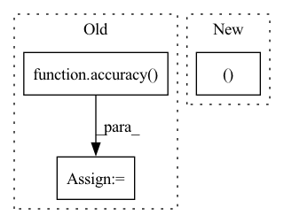

Pattern ID :42043

Before Change
preds = self(x)
loss = F.cross_entropy(preds, y)
// loss.requires_grad = True
acc = accuracy(preds, y)
self.log("train_acc_step", acc)
self.log("train_loss", loss)
return loss
After Change
def training_step(self, batch, batch_idx):
x, y = batch[:, 0:self.
n_steps_past, :, :, :], batch[:, self.
n_steps_past:, :, :, :],
x = x.permute(0, 1, 4, 2, 3)
y = y.squeeze()
preds = self(x).squeeze()
In pattern: SUPERPATTERN
Frequency: 4
Non-data size: 3
Instances
Fragment ID: 117758821
Project Name: subhadityamukherjee/pytorchtutorialrepo
Commit Name: b6d74a2a1f63dc457b6722982e312f7bffff1195
Time: 2021-02-14
Author: msubhaditya@gmail.com
File Name: applications/videoPrediction/WIPvideoPred.py
M Class Name: LitModel
N Class Name: LitModel
M Method Name: training_step(3)
N Method Name: training_step(3)
M Parent Class: pl.LightningModule
N Parent Class: pl.LightningModule
M File Name: applications/videoPrediction/WIPvideoPred.py
N File Name: applications/videoPrediction/WIPvideoPred.py
M Start Line: 221
M End Line: 227
N Start Line: 290
N End Line: 309
'>
Before Change
logp = torch.distributions.utils.probs_to_logits(
scores, is_binary=False)
loss = criterion(logp, labels)
acc = accuracy(scores, labels)
iou = intersection_over_union(scores, labels)
self.valid_losses.append(loss.cpu().item())
self.valid_accs.append(accuracy(scores, labels))
After Change
for idx, inputs in enumerate(tqdm(valid_loader,
desc="validation")):
results = model(inputs["data"])
loss, gt_labels, predict_scores = model.loss(
Loss, results, inputs, device)
acc = Metric.acc(predict_scores, gt_labels)
iou = Metric.iou(predict_scores, gt_labels)
'>
Fragment ID: 117758818
Project Name: isl-org/open3d-ml
Commit Name: 89937ebfc8ba0757f2626e88d4243cc88fd61a84
Time: 2020-08-20
Author: yilingq@umd.edu
File Name: ml3d/torch/pipelines/semantic_segmentation.py
M Class Name: SemanticSegmentation
N Class Name: SemanticSegmentation
M Method Name: run_train(2)
N Method Name: run_train(2)
M Parent Class:
N Parent Class:
M File Name: ml3d/torch/pipelines/semantic_segmentation.py
N File Name: ml3d/torch/pipelines/semantic_segmentation.py
M Start Line: 159
M End Line: 268
N Start Line: 157
N End Line: 258
'>
Before Change
preds = self(x)
loss = F.cross_entropy(preds, y)
// loss.requires_grad = True
acc = accuracy(preds, y)
self.log("val_acc_step", acc)
self.log("val_loss", loss)
After Change
def validation_step(self, batch, batch_idx):
x, y = batch[:, 0:self.
n_steps_past, :, :, :], batch[:, self.
n_steps_past:, :, :, :],
x = x.permute(0, 1, 4, 2, 3)
y = y.squeeze()
preds = self(x).squeeze()
'>
Fragment ID: 117758819
Project Name: subhadityamukherjee/pytorchtutorialrepo
Commit Name: b6d74a2a1f63dc457b6722982e312f7bffff1195
Time: 2021-02-14
Author: msubhaditya@gmail.com
File Name: applications/videoPrediction/WIPvideoPred.py
M Class Name: LitModel
N Class Name: LitModel
M Method Name: validation_step(3)
N Method Name: validation_step(3)
M Parent Class: pl.LightningModule
N Parent Class: pl.LightningModule
M File Name: applications/videoPrediction/WIPvideoPred.py
N File Name: applications/videoPrediction/WIPvideoPred.py
M Start Line: 231
M End Line: 236
N Start Line: 313
N End Line: 321